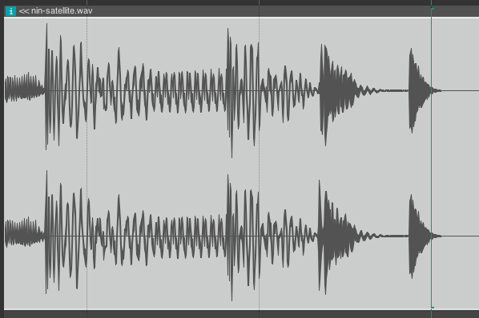
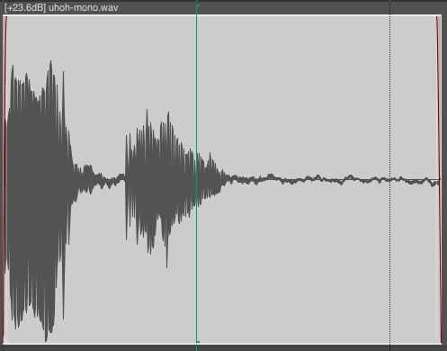

MEDIAART 2G03: Sound as Signal, Clipping, Noise
Sound as Signal
In this module, we start to think about sound as a signal. What do I mean by signal? Basically, for our purposes in this audio course, a signal is something that changes in time and can be measured.
The image below is a screenshot from the Reaper digital audio workstation (DAW) and it shows a very typical visualization of sound as signal. We would find very similar visualizations in countless pieces of software that deal with sound recording and transformation. We can use this visualization as a way of talking about three important characteristics of sound/audio signals.

-
Signals vary over time, and in this image from Reaper, time goes from left to right. We see two wiggly lines in the image because this is a visualization of a “stereo signal”, that is to say a signal with two channels in it, one for the left speaker or headphone, and one for the right speaker or headphone.
-
Our sound signals tend to be more or less continuous, or at least that’s something we can say for now as a kind of tentative, initial observation. (Later, when we deal with frequency and the spectrum, and later again, when we deal with the synthesis of noise, we’ll develop a more complex view of this). But for now, we can observe that our signal doesn’t jump around all over the place completely randomly – instead there are visible curves of different sizes that move away from, and back towards the centre.
-
I’ve already accidentally introduced a third general characteristic of sound signals: they are bi-polar. Sound signals are bi-polar because they vary in both directions around a middle, resting point. They are not just going up and down above some starting position, and they are not just going down and up below some starting position, they are moving away from a starting position in either direction and then coming back to that starting position.
This bipolarity of sound signals is very closely related to the way that sound exists physically in the world, and to the types of devices that we use to represent and produce sound. For example, a loudspeaker has a cone that’s pushed forward and back by an electromagnet (to be more precise: by an electrical coil and a magnet). When no voltage (no electricity) is pushing the electromagnet, the cone just kind of sits in the middle. When a positive voltage is applied, the cone moves forward correspondingly. When a negative voltage is applied, the cone moves back. The loudspeaker, in its design, is oriented towards reproducing such bipolar signals.
Similarly, our eardrum is basically a very thin piece of skin, continuous with the rest of the skin on our body, but inside of our eardrum and inside of our ear canal. And if we were to somehow magically place ourselves in a situation where no air motion was happening, it would just sit perfectly still. But, at least here aboveground on planet Earth, there is always air motion. Sometimes the air pressure is a little higher, sometimes the air pressure is a little lower, and those changes push and pull the ear drum into or out of our head. So the ear drum, also, is oriented towards carrying such bipolar signals.
We could come up with many examples of sound/audio things that are oriented towards bipolar signals. I’ll just list one more for now: when we have an electrical signal (a voltage in a wire), it could be positive voltage or it could be negative voltage – in other words, electrical voltage is also something that is bipolar. Electrical voltage is thus one important way of representing or transmitting information about sound. Nowadays when people talk about “analog” audio, that’s often a big part of what they mean: devices and signals where audio is represented with an electrical voltage that changes continuously. Later we will see that digital audio systems almost always have parts to them that are based on “analog”, electrical voltage.
Two Problems: Clipping and Noise
In the image below, we see a typical representation of a “mono” sound signal (that is to say, a signal where there is only one channel, not two like in a stereo signal). Looking at a visualization of a mono signal will help us to think about another characteristic of sound signals: they typically fall in between a definite range. To put that another way: there is usually a definite maximum (an upper limit) and an anti-maximum (a lower limit) beyond which they can’t go. This visualization of a sound signal [below], for example, has a top and a bottom, and if the signal were to “try” to go beyond that maximum we wouldn’t see it anymore.

Now imagine a loudspeaker cone that moves forwards and backwards around a rest position, driven by an electrical signal. Now imagine that we give it an electrical signal that “tries” to push it further than it can go: that wouldn’t work... if the voltage is way too strong it might even break the loudspeaker, but even before things go that far, the loudspeaker wouldn’t be able to move with the same shape in time as the signal it was being given. So we wouldn’t be hearing that signal – instead we’d be hearing a damaged, incomplete, inaccurate version of this signal. This is sometimes called “distortion” in audio, and the specific form of distortion where a signal gets cut off at some precise maximum is called “clipping”.
Clipping can also happen when we are recording. When we have electronics that are measuring sound levels, and we give those electronics levels that are too high (too far from the middle, resting point), then they’re going to record that as just being the limit. We’ll never know what the levels were. We’ll never know what the “real” shape of the sound we’re trying to record was. And then when we play it back, we're going to hear something quite different than what we thought we recorded. When we listen to recordings that are mildly or moderately “clipped” they will likely have lots of extra high frequency sounds added to them. Extremely “clipped” recordings may be essentially unrecognizable as what they were recordings of. Rescue or repair of clipped recordings is not completely impossible in all circumstances... but it is likely impossible in most circumstances. For this reason: clipping is one of two basic problems in audio production that we (usually) need to avoid at all costs.
The other basic problem in audio production is the problem of noise. The word noise can be understood in multiple ways, but for our present purposes let’s define noise as “signals we don’t want”. Imagine that we are recording a voice with a microphone. The acoustic energy from the voice arrives, through the air, at the microphone, where it is converted into electrical energy. But any acoustic energy from everything else in that environment also arrives at the microphone. The signal that the microphone produces reflects a mix of energy from ALL of the sound sources in that environment. These might include interfering life forms, machines, wind, air conditioning, distant ambient traffic noise, etc. If these sound sources are strongly present in the signal that the microphone produces, they’ll probably distract a listener’s attention from the sound we are trying to present to them. If they are only very weakly present in the signal, then they are much less likely to be a problem. All recordings, all digital audio things that we make will have noise in them – noise is an unavoidable fact of audio production. However, there are various strategies we can learn and apply to make the presence of noise (signals that we don’t want) less noticeable, or if we’re lucky, so much less noticeable that absolutely no one can hear it.